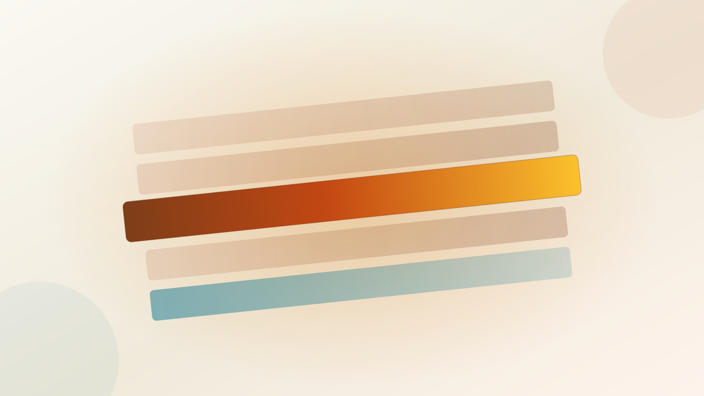

Adopt shadcn/ui on Base UI.
The only candidate that costs nothing in cascade negotiation, nothing in token duplication, and nothing in license fees — and the three sibling decisions this series already made (TanStack Table, React Hook Form, a standalone toast) are its native idiom rather than a duplication of it.
Own the component code. Brand tokens live in @theme. Zero cascade tax on a Tailwind 4 monorepo.
…the team would rather trade brand precision for 120 components it never has to write.
Not on this stack. Three independent failures: the cascade, the token bridge, and a paywalled grid you already replaced.
In July 2026 shadcn init began defaulting to Base UI rather than Radix
[1] — a change every one of the six
angles independently rediscovered. So “shadcn/ui vs Base UI 1.0” is not a choice: shadcn is a
pre-styled Tailwind layer over Base UI [2].
Two names, one candidate. The honest fork left on the table is owned code vs vendored library — and what decides it is where each kit's CSS lands in the cascade.
The card
Six axes, one per angle the expedition sent out. Chips are this view's bookkeeping of what those angles found — not a vendor benchmark. Tax means a documented, opt-in fix exists; blocked means the cost is structural on this stack.
| Axis — scored by |
0 clean · 4 tax · 2 blocked
|
3 clean · 3 tax · 0 blocked
|
2 clean · 3 tax · 1 blocked
|
— absorbed into shadcn —
|
|---|---|---|---|---|
|
expedition · 141 sources
|
TAX
Runtime-injected Emotion CSS is unlayered, so it silently outranks every utility you write
[5][6].
Fixable via first-party |
CLEAN
Never levies the tax. The component CSS is Tailwind utilities, already inside the layer [3]. |
TAX
Default |
CLEAN
Unstyled primitives — nothing to outrank [4]. |
|
survey · 25 sources
|
BLOCKED
A JS theme object stays the source of truth and only emits CSS variables downstream — a hand-maintained bridge and a permanently double-defined palette. |
CLEAN
Brand tokens sit directly in Tailwind's |
BLOCKED
Same JS-theme bridge as MUI. For a publishable design system carrying the Itenium brand, that is the whole job done twice. |
CLEAN
Tokens go straight into |
|
survey · 41 sources
|
BLOCKED
Coverage is real, but row virtualisation, column pinning, grouping and Excel export are behind MUI X Pro/Premium at $299–599/dev/yr [11][12] — paying to duplicate the TanStack Table this series already chose. |
TAX
You write what you need. Data grid comes from TanStack Table — already the series' pick, so the gap is pre-paid. |
CLEAN
Best in field. The only kit that covers a CRUD console in-box, with a single gap: the data grid. |
TAX
Primitives only. Every visual decision is yours to make — which is the point, and the cost. |
|
survey · 31 sources
|
BLOCKED
An accessibility backlog open since 2019 [15]. And Pigment CSS — the zero-runtime escape from Emotion — is officially paused in alpha [10]. Do not plan around it. |
TAX
Over a thousand open issues [14]. Mitigated by the model itself: the code is in your repo, so a stalled upstream is an inconvenience, not a blocker. |
CLEAN
Best-maintained project in the field by a distance: 31k stars against 35 open issues [13]. |
TAX
1.0 is new, and it is maintained by MUI — the company this decision is otherwise walking away from. |
|
survey · 26 sources
|
TAX
Own primitive layer, carrying the 2019 backlog above. No VPAT. |
CLEAN
Inherits Base UI's primitives wholesale since July 2026 [1]. No VPAT — nobody in this field ships one. |
TAX
Own primitives, well-kept, unaudited. No VPAT. |
CLEAN
The primitive foundation itself — now load-bearing for two of the four options [2]. No VPAT. |
|
recon · 10 sources
|
TAX
Hand-written |
TAX+
Same globs, plus the governance the copy-in model demands: a |
TAX
Same globs. |
TAX
Same globs. |
Standing / down
MUI
Mantine
- The best-maintained project in the field by a distance [13]. This is not a consolation prize.
- Covers a CRUD admin console in-box with one gap: the data grid.
- Pays the cascade tax once, via
styles.layer.css[8]. - Loses on tokens. The JS theme object stays authoritative; your brand lives in two places forever.
shadcn/ui
- Nothing in cascade negotiation. The components are utilities; they were always in the layer.
- Nothing in token duplication. One
@theme, one palette [9]. - Nothing in license fees. The code is yours the moment it lands.
- TanStack Table, React Hook Form, a standalone toast — the sibling decisions already made are its native idiom, not a duplication of it.
for
libs/**
Tailwind 4 emits nothing at all for code in an Nx library until you hand-write @source directives across the
project boundary [16].
It lands on all four candidates equally — and it is the largest single piece of plumbing in this decision,
larger than the difference between the kits it is scoring.
Whichever column you pick, budget for this row first. Read the full accounting in the Nx 21 build-ergonomics recon.
The six rounds
Each axis on the card was scored by its own angle. Open one to see how it was judged.
Styling engine and Tailwind 4 interop: which React component kit survives the cascade
Tailwind 4 puts every utility inside a cascade layer, so any kit that ships unlayered CSS silently outranks it — which reframes the whole choice as a question about where each kit's styles land in the layer stack.
Theming, tokens and brand reach
On a Tailwind-4 monorepo the token substrate decides the kit: shadcn/ui and Base UI put brand tokens directly in @theme, while MUI and Mantine keep a JS theme object as the source of truth.
Admin-console component coverage: what each kit actually ships in 2026
Only Mantine covers a CRUD admin console in-box with a single gap (the data grid); MUI's coverage is real but the grid features you actually need are paywalled.
The 2026 maturity and governance baseline
The four kits are not the same category: MUI and Mantine are batteries-included libraries, shadcn/ui is a code registry, Base UI is primitives — and shadcn now defaults to Base UI.
A11y & primitive foundations: what each kit actually inherits
shadcn-vs-Base-UI is a false dichotomy. The real choice is which primitive foundation you inherit — and none of the four kits publishes a VPAT.
Nx 21 build ergonomics: which UI kit survives a shared itenium-ui library
shadcn/ui's copy-in model does work in a shared Nx library, but only if you own the plumbing: a components.json in the lib, a private registry for updates, and @source globs across the boundary.
The sharpest thing left on the table
Base UI is now load-bearing for two of the four options — and it is maintained by MUI, the company. Choosing shadcn to escape MUI's styling engine still routes the runtime through MUI's engineers [2].
And nobody in this field ships a VPAT. Not MUI, not Mantine, not shadcn/ui, not Base UI.
Whatever accessibility claim itenium-ui makes downstream, it will be making on its own evidence.
Judges' evidence
The 16 sources the ruling above rests on. The 274 behind the six rounds live in their own pages.
enableCssLayer fix. A tax, not a wall.
08libs/** until you write the @source globs.
